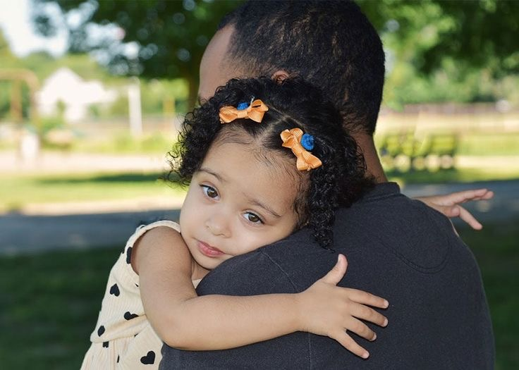
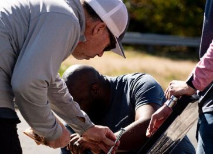

What We Do
About Us
News & Updates
Ways to Give
Contact
DONATE

Providing Help and Hope to All Those in Need
GET HELP
VOLUNTEER
Latest News and Updates

VOLUNTEER
Making Catholic Charities Inn Feel Like a Home with Rebuilding Together Boston
STORIES OF HOPE
Dancing to the Rhythm: Empowering Families Through Dance Once Step at a Time
ADULT ED & WORKFORCE DEV.
HiSET graduate and mom of three Briyanna on Finding the Motivation to Earn Her Degree